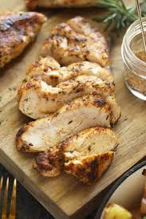

Juiciest Grilled Chicken

Description
This is my favorite recipe for grilled chicken. Specifically, This
recipe is for chicken breasts, but it can also be used for the other
parts of the chicken (as long as they are cooked to a safe temperature).
The secret is to brine it to obtain a wonderful texture with an even
layer of seasoning from the inside out. Afterwards, it will be spiced
and cooked on the grill (without overcooking) to obtain the maximum
flavor and maintain its juiciness!
Ingredients
- Chicken Breasts (preferrably organic)
- Salt Brine
- Table Salt
- Water
- Brown Sugar (optional)
- Mayonnaise
- Spices (optional)
- Cayenne Pepper
- Smoked Paprika
- Garlic Poweder
- Onion Powder
- Cumin Powder
Steps
Brining the Chicken Breasts
- Flatten the chicken breasts with a mallet, rolling pin, or a
flat pan. This will ensure even cooking to avoid undercooked or
dry areas within the same piece. Note that organic
chicken breasts are smaller and will cook much easier while
also giving a more pleasant texture.
- In a bowl large enough to comfortably hold all the pieces, add
enough cool water to be able to fully submerge every piece. Add the table
salt to the water and stir until fully dissolved (approximately
1 tablespoon of salt for every 2 cups of water). If using sugar,
dissolve it in the brine (approximately 1 tablespoon total). The
brine is the way the protein is seasoned with salt.
- Once the brine is prepared, add all the pieces to the bowl and
fully submerge. Cover with plastic wrap and leave in the fridge
to brine. For optimal results, leave in the fridge for 1 hour (it
needs at least 45 minutes to brine and leaving it for longer
than 75 minutes could result in excessively seasoned chicken).
Preparing the Chicken to Cook
- After the chicken has adequately brined, remove from fridge and
drain. Pat dry with paper towls, cover, and leave at room temperature for
at least 30 minutes (to ensure even cooking from within).
- Once the chicken has adequately remained at room temperature, lightly
cover both sides with mayo using a brush (this will protect the
chicken from drying out and will prevent it form sticking on the
grill).
- If spices will be used (highly recommended), add them
to the breasts. (The spices listed in the ingredients
are will give a wonderful color and a sophisticated southwestern
flavor profile).
Grilling the Chicken
- Turn the grill on and allow it to preheat for at least 15 minutes.
A charcoal grill can be used to give an unmatched wonderful smoky flavor to
the protein. A gas grill can conveniently be used and will still
provide a good char.
-
Once the grill has been preheated at a good temperature (around
400-450°F), place the breasts on the grill (without overcrowding).
Leave for approximately 3 minutes and the rotate each piece 90°.
- Leave for 3 more minutes and then flip the pieces over. After 3 more
minutes, rotate each piece again 90°. At this point, the internal
temperature of each piece can start to be checked with an internal meat
thermometer.
- Once the internal temperature reaches the safe and desired point,
remove the piece from the grill onto a heat resistand dish. Note
that the optimal juiciest boneless chicken breast can be obtained
from an internal temperature of 153°F that lasts at least 3 minutes,
but always follow USDA guidelines for cooking safely.
Resting the chicken
- At this point, the chicken will release wonderful aromas and juices.
As tempting as it may be to cut into the meat for a taste, it is
vital to let the meat rest for at least 5 minutes.
Fresh off the grill chicken will be hot inside and needs to continue
to cook. This will also prevent the juices from the chicken from
spilling out since freshly cooked meat doesn't retain its juices until
after resting.
- Following the resting, serve with your preferred sides and
enjoy immediately!
Conclusion
As can be seen, this recipe has more steps and labor than most. But
every step of the way is important to be able to create
the juiciest and most flavorful poultry product.
Thank you for your consideration in this recipe! - Jose C.
Back to homepage